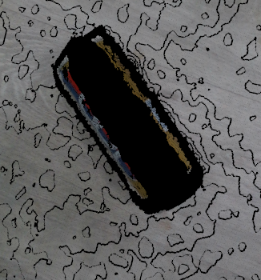

Grasp Planner General Parameters (Point Cloud)¶
Parameters that define the Point Cloud parameters used for point cloud processing
grasp_planning_node:
ros__parameters:
.....
point_cloud_params:
passthrough_filter_limits_x: [-0.50, 0.50]
passthrough_filter_limits_y: [-0.15, 0.40]
passthrough_filter_limits_z: [0.01, 0.70]
segmentation_max_iterations: 50
segmentation_distance_threshold: 0.01
cluster_tolerance: 0.01
min_cluster_size: 750
cloud_normal_radius: 0.03
fcl_voxel_size: 0.02
octomap_resolution: 0.01
Passthrough Filtering Parameters¶
In order to reduce point cloud processing and iteration times, the Point Cloud Library's implementation of the passthrough filter function is used to crop out useful parts of the point cloud in question. This is done through setting filter limits in the X, Y and Z axes which act as the range within which points in the point cloud will be kept.
point cloud before filtering |
point cloud after filtering |
|---|---|
|
|


As shown above, unnecessary information on the right side of the point cloud was removed. Limits can be set even tighter in order to crop out more of the work surface.
Warning
Ensure that an appropriate passthrough filter limit is chosen for the X, Y and Z axes. You might end up cropping out useful information if the limits are too tight.
More information can be found in the Passthrough Filter Tutorials
point_cloud_params.passthrough_filter_limits_x¶
passthrough_filter_limits_x: [-0.50, 0.50]
Description |
Lower and Upper Passthrough Filter limits in the X-Axis |
|---|---|
Type |
double array |
Warning
The tighter the limits, the faster the point cloud will be processed, but you run the risk of cropping out important information
The wider the limits, the slower the point cloud, but you will not crop out important information.
point_cloud_params.passthrough_filter_limits_y¶
passthrough_filter_limits_y: [-0.15, 0.40]
Description |
Lower and Upper Passthrough Filter limits in the Y-Axis |
|---|---|
Type |
double array |
Warning
The tighter the limits, the faster the point cloud will be processed, but you run the risk of cropping out important information
The wider the limits, the slower the point cloud, but you will not crop out important information.
point_cloud_params.passthrough_filter_limits_z¶
passthrough_filter_limits_z: [0.01, 0.70]
Description |
Lower and Upper Passthrough Filter limits in the Z-Axis |
|---|---|
Type |
double array |
Warning
The tighter the limits, the faster the point cloud will be processed, but you run the risk of cropping out important information.
The wider the limits, the slower the point cloud, but you will not crop out important information.
Plane Segmentation Parameters¶
For Object extraction, the Grasp Planner will first remove the set of points in the point cloud representing the surface on which the objects are placed. This is done using the Point Cloud Library's Plane Segmentation functions, specifically Sample Consensus (SAC) methods
point_cloud_params.segmentation_max_iterations¶
segmentation_max_iterations: 50
Description |
Set the Maximum number of iterations for SAC methods |
|---|---|
Type |
Int |
Warning
The higher the number, the better the result, but longer times will be taken The lower the number, the less accurate the result, but shorter time will be taken
point_cloud_params.segmentation_distance_threshold¶
segmentation_distance_threshold: 0.01
Description |
Determines how close a point must be to the object in order to be considered an inlier |
|---|---|
Type |
Double |
Warning
A higher number ensures that more points will be clustered with the object cluster, but you run the risk of including points on the table as part of the object
Warning
A lower number ensures that only objects really close to the cluster is included inside, but you may run the risk of missing out some points on the surface
Object Segmentation Parameters¶
After the plane has been removed from the point cloud input, the assumption is made that the rest of the point cloud represents the pick objects (Unless using the EPD workflow, more on that here: Grasp Planner Input Message Types). The remaining Point Cloud will then be split into clusters using Euclidean Cluster Extraction provided by the Point Cloud Library, each cluster representing a grasp object
point_cloud_params.cluster_tolerance¶
cluster_tolerance: 0.01
Description |
Get the spatial cluster tolerance as a measure in the L2 Euclidean space. |
|---|---|
Type |
Double |
point_cloud_params.min_cluster_size¶
min_cluster_size: 750
Description |
For Euclidean cluster extraction. Determine the minimum number of points to be considered a cluster. |
|---|---|
Type |
Int |
Warning
If it is set too high, small objects may be clustered together to satisfy the minimum cluster size.
If set too small,certain objects might be split into multiple clusters if the point cloud is not dense enough
Normals Estimation Parameters¶
For both finger and suction gripper grasp planning, we take into account the surface of the object as well, which involves understanding the curvature of the surfaces, which requires estimation of point normals for each point on the surface of the object, which we will use the Point Cloud Library to do so.
More information on the normal estimation for PCL can be found here
point_cloud_params.cloud_normal_radius¶
cloud_normal_radius: 0.03
Description |
The radius of points around each point to determine the normal estimation. |
|---|---|
Type |
Double |
Warning
If the radius value is too big, you run the risk of including adjacent surfaces around that point, which distorts the estimated point features
FCL Collision Object Parameters¶
In order to account for collision between end effector and the grasp area/grasp object, we use the Flexible Collision Library (FCL) as a method to generate collision objects for both grasp samples and grasp area.
This is done by first converting the point cloud to an octomap, then to an FCL collision object. In order to speed up conversion time, we first downsample the point cloud before conversion
point_cloud_params.fcl_voxel_size¶
fcl_voxel_size: 0.02
Description |
Size of resulting voxels after downsampling of point clouds. |
|---|---|
Type |
Double |
Warning
If it is set too large, collision object conversion will be faster, but certain features may be lost during downsampling.
If set too small, collision object conversion will be longer, but the collision object shapes will more accurately represent the original point cloud
point_cloud_params.octomap_resolution¶
octomap_resolution: 0.01
Description |
Resolution of octomap (Used for conversion to collision object) |
|---|---|
Type |
Double |